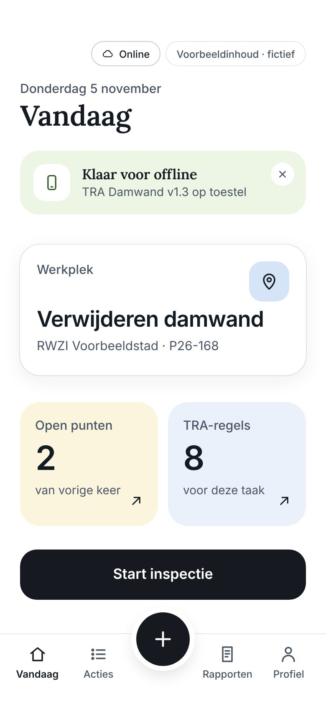
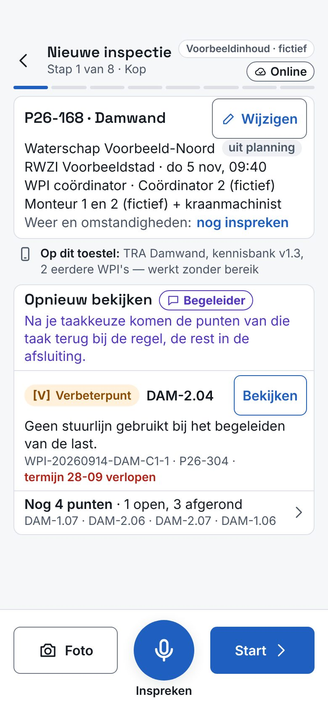
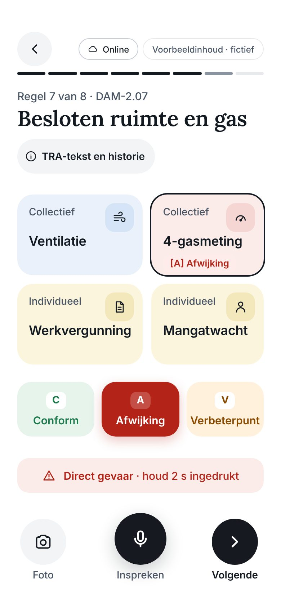
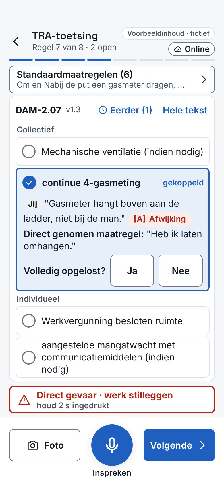
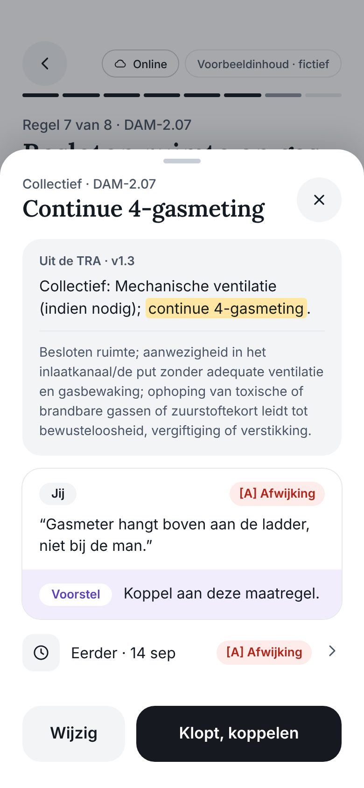
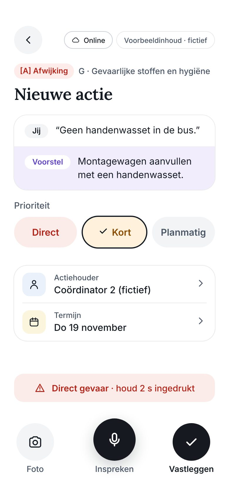
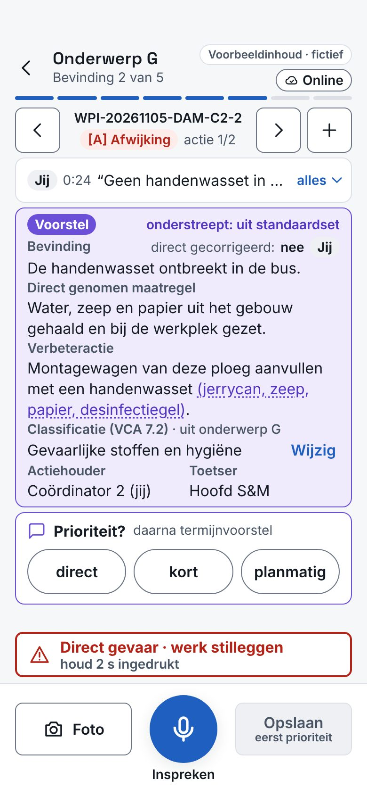
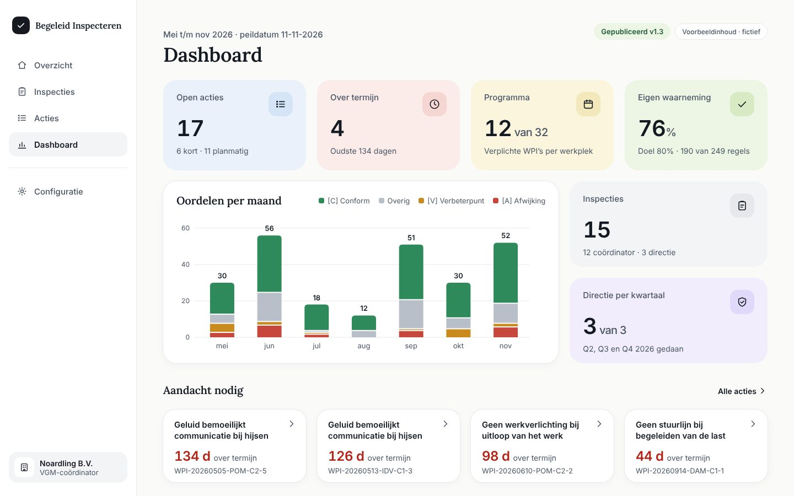
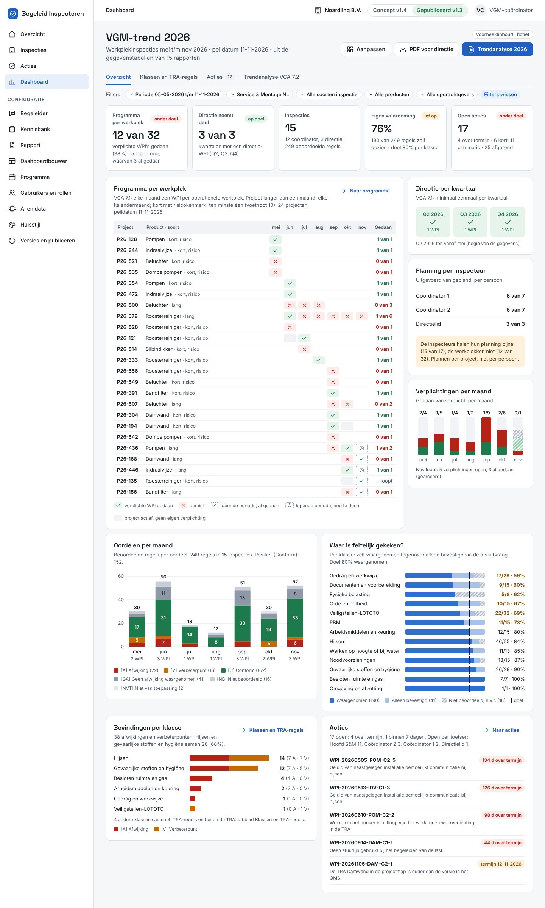
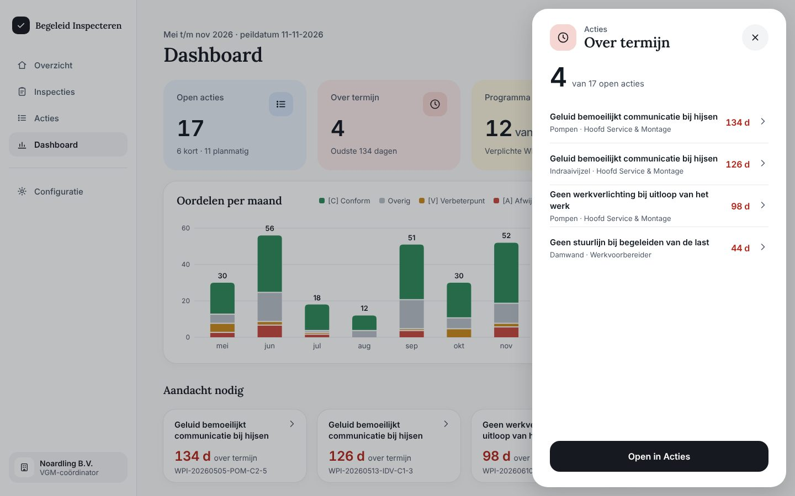

Nieuwe stijl — richtingvoorstel
Vijf sleutelschermen opnieuw ontworpen naar jouw stijlvoorbeeld: rust, kaarten, details achter een tik. Daarnaast de oude versie ter vergelijking. Voorbeeldinhoud · fictief.
P01-start


P04-tra-toetsing


P04-detail

P07-actie


W09-dashboard


W09-dashboard-paneel
